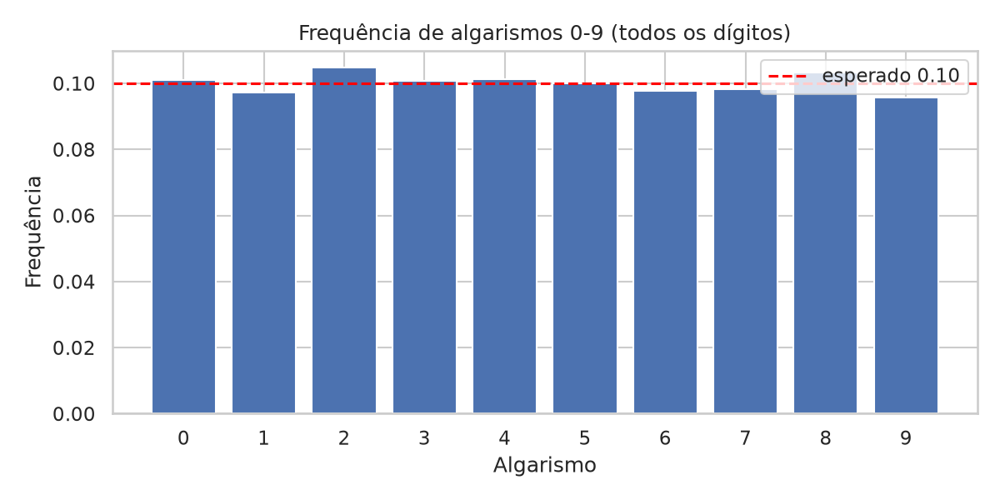
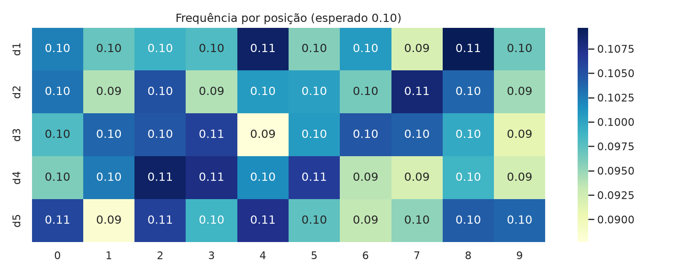
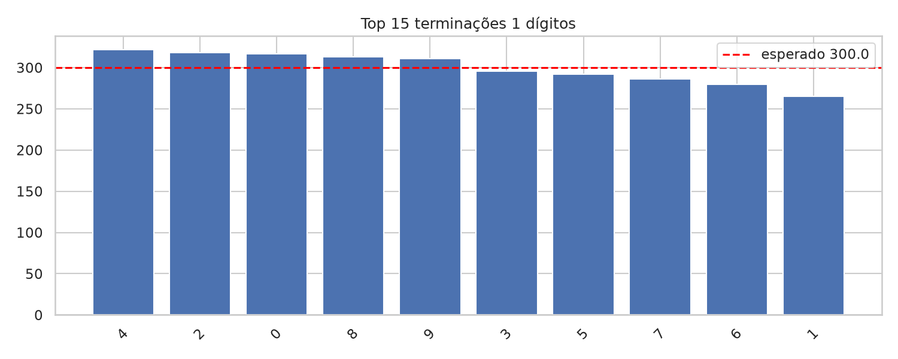
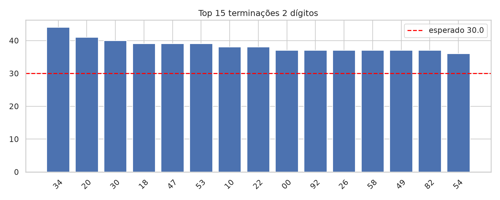
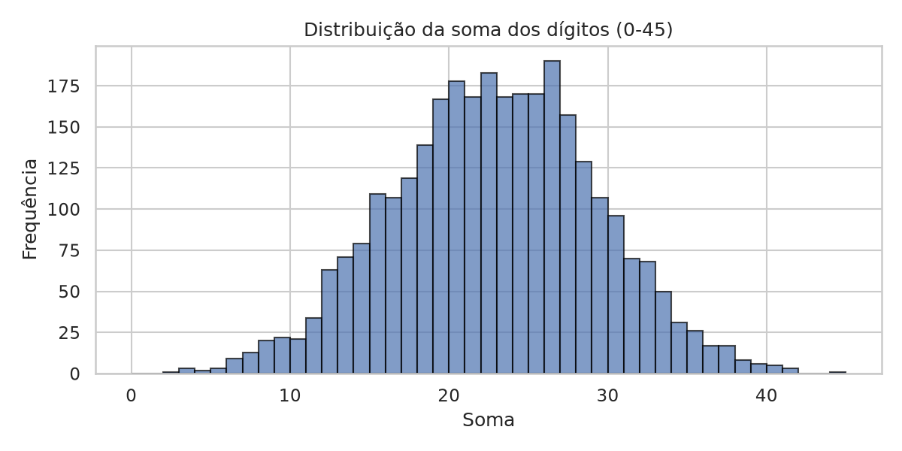
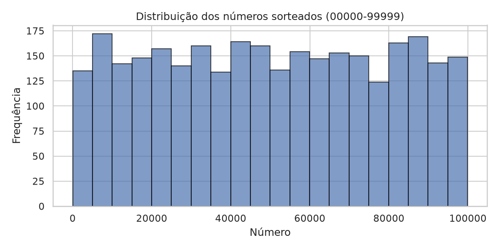
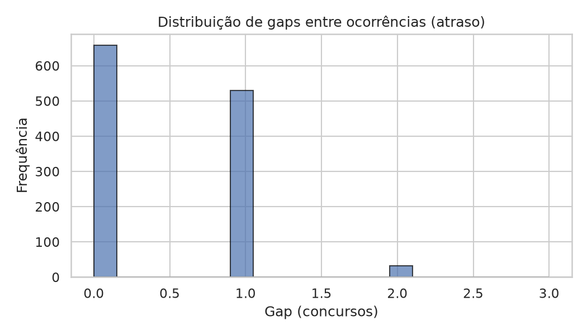
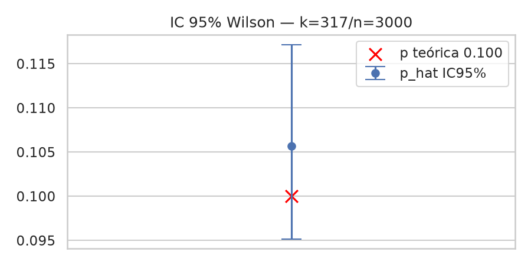
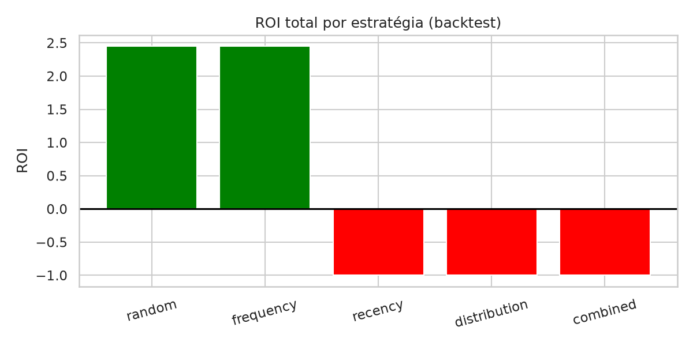
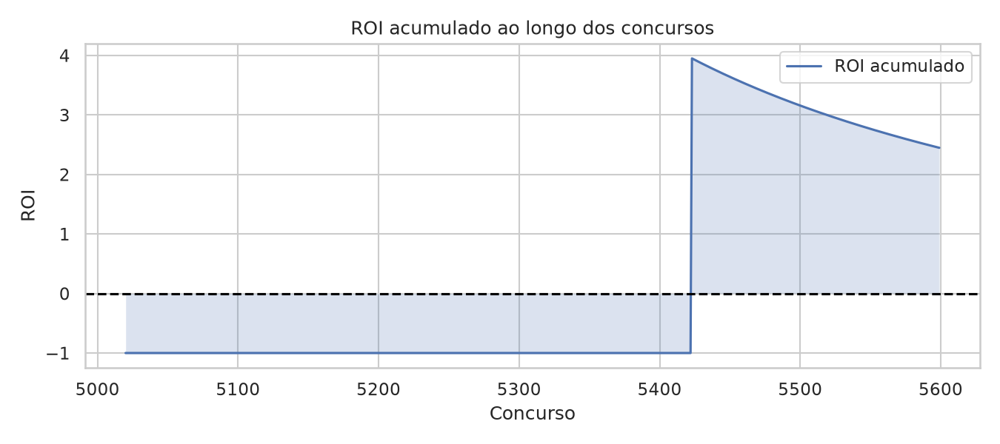

Aviso: Se o sorteio for independente e aleatório, histórico NÃO altera probabilidade do próximo sorteio. Nenhum padrão sem p<0.05 out-of-sample é vantagem real. Interface completa (FastAPI) roda local:
pip install -e ".[web]" && federal web --port 8000
Relatório (600 concursos, 3000 linhas)
Gerado por federal report --iterations 1000 --seed 42 • Hash 5f9bd0f63d81 • 2020-01-04 a 2024-12-05
Frequência algarismos 0-9

Chi2 p=0.30 compatível uniforme (H0 não rejeitada)
Heatmap por posição

Finais 1 dígito

Finais 2 dígitos

Soma dígitos

Distribuição números

Gaps (atraso)

H0 gaps ~ Geométrica, p→compatível → atraso ≠ probabilidade
IC Wilson terminação 0

ROI benchmark

random 2.44 vs frequency 2.44 p=1.0 sem superioridade
ROI acumulado

Como rodar local
pip install -e ".[dev,ml,web]" federal fetch --file data/raw/federal_escala.csv federal validate federal report --iterations 1000 --seed 42 federal web --port 8000 # http://127.0.0.1:8000 → dashboard, /docs → OpenAPI
Conclusão §22
Pergunta: Existe evidência de vantagem sobre aleatório?
Resposta: NÃO foi encontrada evidência estatística suficiente (p≥0.05 out-of-sample, BH, walk-forward). ML 0.896 vs 0.895 não supera dummy.